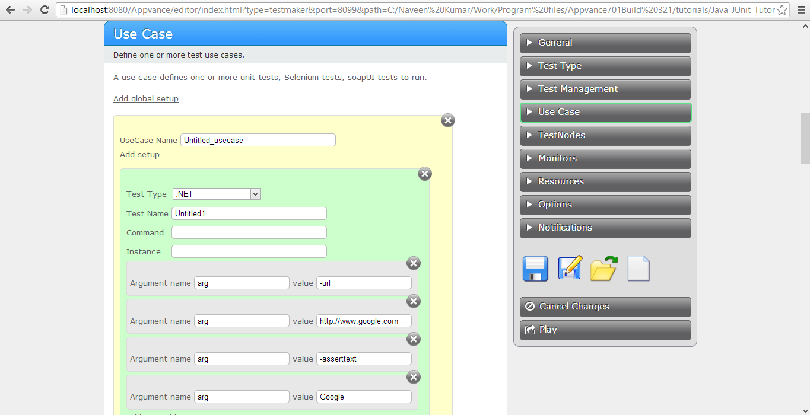

Testing with C# and .NET
APC provides a .NET ScriptRunner to accomplish the following:
- Write unit tests
in C# of your application. Repurpose the unit tests to be
functional tests, load and performance tests, and production monitors
of your application.
- C# applications are often GUI applications that are supposed to be run interactively by users. Testmaker uses its ability to run command line applications to support C# applications developed as scripts that run GUI less.
The following is a simple application Appvance created in Visual Studio. We made the GUI-Less by removing the Forms and using a simple module with an Main subroutine. This example uses the WinInet library to read a page and then a string search to assert it contains some text.
First, let's declare the assembly:
using
System.Reflection;
using
System.Runtime.CompilerServices;
using
System.Runtime.InteropServices;
// General
Information about an assembly is controlled through the following
// set of
attributes. Change these attribute values to modify the information
// associated
with an assembly.
[assembly:
AssemblyTitle("CheckURL")]
[assembly:
AssemblyDescription("")]
[assembly:
AssemblyConfiguration("")]
[assembly:
AssemblyCompany("PushToTest")]
[assembly:
AssemblyProduct("CheckURL")]
[assembly:
AssemblyCopyright("Copyright © PushToTest 2011")]
[assembly:
AssemblyTrademark("")]
[assembly:
AssemblyCulture("")]
// Setting
ComVisible to false makes the types in this assembly not visible
// to COM
components. If you need to access a type in this assembly from
// COM, set
the ComVisible attribute to true on that type.
[assembly:
ComVisible(false)]
// The
following GUID is for the ID of the typelib if this project is exposed
to COM
[assembly:
Guid("3ea6166b-5ab3-40e1-9c46-3b2b235d7944")]
// Version
information for an assembly consists of the following four values:
//
//
Major Version
//
Minor Version
//
Build Number
//
Revision
//
// You can
specify all the values or you can default the Build and Revision
Numbers
// by using
the '*' as shown below:
// [assembly:
AssemblyVersion("1.0.*")]
[assembly:
AssemblyVersion("1.0.0.0")]
[assembly:
AssemblyFileVersion("1.0.0.0")]
Find the logic of the program in CheckURL.cs. This defines the CheckURL class. The class defines a single 'main' method to call. It accepts parameters from the command-line:
-url defines the URL to load
-asserttext defines the text to check in the URL response
CheckURL throws an exception when the asserttext value is not found in the URL response.
We build this project to a .exe file.We use the APC Scenario Builder to reference the .exe file in a APC Scenario.

|